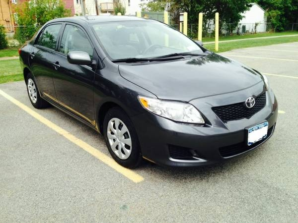
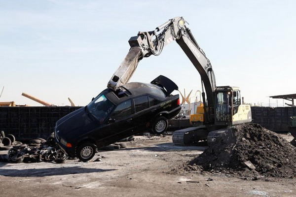

Automobil
 Automobil je motorno vozilo s karoserijom raznih oblika postavljenom na dvije osovine s četiri tocka, a većinom se koristi za prijevoz putnika. Razgovorno se automobil najčešće naziva auto, a vrlo rijetko se koristi i samovoz, što je doslovni prievod "automobil".
Automobil je motorno vozilo s karoserijom raznih oblika postavljenom na dvije osovine s četiri tocka, a većinom se koristi za prijevoz putnika. Razgovorno se automobil najčešće naziva auto, a vrlo rijetko se koristi i samovoz, što je doslovni prievod "automobil".
Razvoj današnjih automobila je počeo 1886. godine u Nemackoj. Prvi automobil je konstruirao i napravio Karl Benz, 3. jula 1886. u Mannheimu. Kratko nakon toga su i Gottlieb Daimler i Wilhelm Maybach u blizini Stuttgarta kao i Seigfried Marcus u Becu proizveli svoje verzije automobila.

Najvise proizveden model automobila bila je Toyota corola, sa preko 35 miliona jedinica napravljenih do 2010. godine.
Vozilo kao faktor bezbednosti u saobracaju
Vozilo je jedan od glavnih faktora bezbednosti u saobracaju.Vozac ne sme upravljati vozilom na putu ako ono nije snabdeveno propisanim uredjajima i opremom ili ako su ti uredjaji ili oprema u neispravnom stanju.Vozilo se ne sme opterecivati preko svoje dozvoljene nosivosti.Ako se vozilo usled kvara ili saobracajne nezgode, onesposobljeno za dalje kretanje, vozac je duzan da vozilo ukloni sa kolovoza sto pre.
Šta Govori Boja Vašeg Automobila O Vama?
Bela boja
Automobil bele boje odaje utisak da volite da se pokazujete drugima kao mlada, sveža i moderna osoba. Bela je postala boja luksuza i kvaliteta. Ona zapravo sugeriše koliko imate ukusa i elegancije, poštenja i čistoće. Naravno, osim emotivne, beli automobili imaju i praktičnu stranu. Bela boja odbija sunce pa, za razliku od crnih automobila, temperatura u unutrašnjosti nikada ne prelazi 200 stepeni Celzijusa.
Crna
Crna je boja koja predstavlja luksuz. Prema istraživanjima crnu boju su koristili najluksuzniji automobili na svetu. Iako većina misli da je crna“obična” boja, ona odaje osećaj sofisticiranosti i diplomacije. Crni automobili se vezuju za osobe koji žele da istaknu svoju dominaciju, poput kralja, princa, vođe. Muškarci odabirom crne boje za njihov automobil žele da pokažu svetu kako oni imaju kontrolu nad svojim životom, koliko su važni i otmeni.
Srebrna/Siva
Da li znate koja boja automobila se smatra najluksuznijom? U pitanju je upravo srebrno-siva. To je boja koja se smatra bezvremenskom, profinjenom, elegantnom i ne previše nametljivom. Trećina svih luksuznih automobila je srebrno siva.
Ili poznatija kao metalik boja. Boja inovacije, tehnike, metala, čelika, hladnoće, sigurnosti, tehnologije i naravno stila. Siva boja automobila vas predstavlja kao osobu koja ima stil, koja zna gde joj je mesto i koja ćeli da pokaže svoj status svima u okolini.
Crvena
Vatreni i emotivni tipovi obično za svoje automobile biraju crvenu boju. Crvena boja predstavlja akciju, muškost i snagu. Za crveni auto se često vezuju pravi muškarci, frajeri, sportisti, emotivci. Crvene automobile obično voze advokati i finansijski stručnjaci. Dok muškarci crvenu boju smatraju za onu koja ih predstavlja kao emotivca i frajera, devojke ovu boju vezuju za akciju, zabavu i provod. A da li znate koga još jako privlači crvena boja? Policiju. To govori podatak da se crveni automobili najčešće zaustavljaju i presreću.
ŠTA KAD AUTO ZAVRŠI NA OTPADU?
Možda naši auto-otpadi nemaju ovakvu mašinerju koja rastavlja automobile na komadiće, ali ipak smo hteli da vam pokažemo šta se dešava sa nekim automobilima, čija je sudbina da završe na auto-otpadu. Nažalost, sudbina većine automobila je da će završiti na nekom sličnom mestu.
Samo pojedini „specijalni“ automobili, budu sačuvani i pretvoreni u prelepe oldtajmere, drugi koji nisu te sreće, završe na otpadu kao izvor rezervnih delova, ili još gore, budu potpuno reciklirani i pretvoreni u prah.
Šta sve spada u obaveznu opremu automobila?
Svetloodbojni (reflektujući) prsluk?
Obavezan. Zakon kaže da ako ste na kolovozu, van svog vozila, morate da imate na sebi svetloodbojni prsluk. Ovaj prsluk treba da vam bude pri ruci, tako da možete da ga dohvatite i obučete u automobilu, a ne da ga držite u gepeku, pa da izlazite i tražite ga ispod nekih torbi.
Sigurnosni trougao?
Obavezan.Ako vam se pokvario auto i prinuđeni ste da se zaustavite na kolovozu, naročito na nekom nezgodnom/rizičnom mestu ili u uslovima loše vidljivosti, obavezno:
- prvo upalite sva četiri migavca
- obucite reflektujući (svetloodbojni) prsluk
- postavite trougao iza vozila
Zakon kaže da trougao mora da se postavi:
- kada je vozač prinuđen da svoje vozilo zaustavi na mestu ili delu puta na kojem je zabranjeno zaustavljanje i parkiranje (npr. u tunelu, na mostu ili nadvožnjaku, u krivini, na putu na kome su kolovozne trake fizički odvojene, osim ako je to dozvoljeno saobraćajnim znakom...)
- kada je vozilo zaustavljeno na kolovozu na takvom mestu da vozači vozila koja se kreću istim smerom ne mogu ili teško mogu blagovremeno da ga uoče
- na putu van naselja, kao i na putu u naselju noću ili u uslovima smanjene vidljivosti kada je mesto na kome se vozilo zaustavlja nedovoljno osvetljeno
Zato je vrlo korisno da vam i trougao bude pri ruci, kako biste mogli što pre da ga postavite i to van naselja na udaljenosti ne manjoj od 50 metara, a u naselju na udaljenosti ne manjoj od 10 metara.
Dakle – sva četiri migavca, prsluk, trougao. Ovo je određeno zakonom, ali i zdravim razumom.
Prva pomoć?
Obavezna.Oprema za pružanje prve pomoći - komplet prve pomoći veličine „B“, koji odgovara standardu SRPS Z.B2.001. Oprema za pružanje prve pomoći mora da se nalazi na dostupnom mestu.
Rezervni točak
Obavezan - OSIM ukoliko imate run-flat pneumatike ili neko sredstvo za privremenu popravku probušenog pneumatika - sprej ili pena u boci s pritiskom, set za popravku, itd.
Rezervni točak je po starom Zakonu o bezbednosti u saobraćaju bio obavezan, čak i kada su se našim putevima uveliko kretali noviji automobili koji su fabrički bili predviđeni da ne „nose“ rezervni točak, već su imali set za popravku probušene gume ili run-flat pneumatike. Naravno, niko nije proveravao ovu nelogičnost, ali je ona ispravljena izmenama Zakona, pa danas u automobilu rezervni točak ne morate da imate ukoliko koristite run-flat pneumatike ili neko sredstvo za privremenu popravku probušenog pneumatika - sprej ili pena u boci s pritiskom, set za popravku, itd.
Dizalica
Nije obavezna. Ipak, ako menjate točak, kako ćete da podignete auto?
Sajla (ili uže) za vuču vozila?
Obavezna. Kako kaže Član 112 Pravilnika o podeli motornih i priključnih vozila i tehničkim uslovima za vozila:
„Uže ili poluga za vuču vozila, koja mora omogućavati vuču vozila na rastojanju od 3 m do 5 m kada se koristi uže, odnosno do 3 m kada se koristi poluga, mora postojati, na dostupnom mestu, u putničkim automobilima proizvedenim, odnosno prvi put registrovanim nakon 1. januara 1984. godine“.
Zimske gume?
Obavezne od 1. novembra do 1. aprila – ALI SAMO ako su na putu sneg, led ili poledica. Morate da imate sve četiri zimske gume, ne samo na pogonskoj osovini. Šara gazećeg sloja mora biti dubine najmanje 4 milimetra.
Lanci za sneg?
Obavezni pod sledećim uslovima - lance ili druga sredstva za povećanje trakcije (npr. „čarape“ za sneg) morate da imate u prtljažniku od 1. novembra do 1. aprila, ali samo ako na putu ima snega i leda i to samo kada vozite van grada.
Evropski izveštaj o saobraćajnoj nezgodi?
Obavezan.
Rezervne sijalice?
Nisu obavezne. Ranije su bile, ali više nisu obavezne, pošto je na mnogim novijim automobilima zamena sijalice suviše komplikovana da bi se obavila negde uz put. Ipak, preporučujemo da uvek imate rezervne sijalice.
Aparat za gašenje požara (protivpožarni aparat) - PP aparat
Nije obavezan. Međutim, preporučujemo da ga imate u kolima.
Kablovi za startovanje
Nisu obavezni. Uprkos tome, nije ih loše imati, pošto mogu da zatrebaju u najnezgodnijem trenutku.
Inostranstvo
Kada putujete u inostranstvo, upoznajte se sa obaveznom opremom u zemlji u koju idete ili kroz koje prolazite. Možda ćete morati da ponesete rezervne naočare, kao za Grčku ili Španiju. U Hrvatskoj i Sloveniji su obavezne rezervne sijalice (osim za ksenone).Protivpožarni aparat je obavezan npr. u Grčkoj, Bugarskoj i Mađarskoj. Ne znamo koliko strogo ili da li se uopšte proveravaju ovakve stavke, ali za svaki slučaj proverite i ponesite ono što je zvanično navedeno.